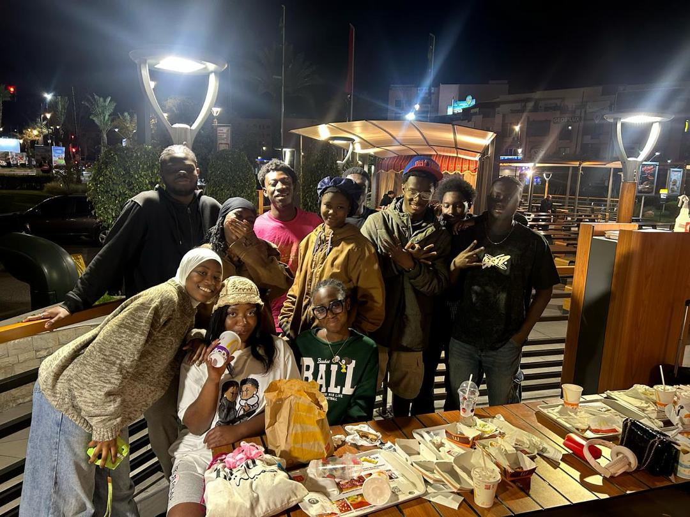
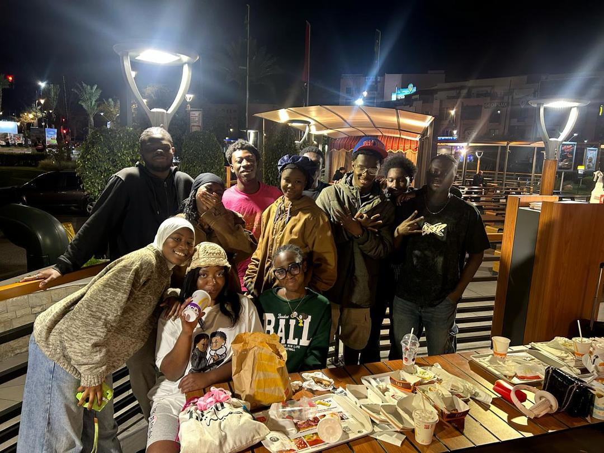
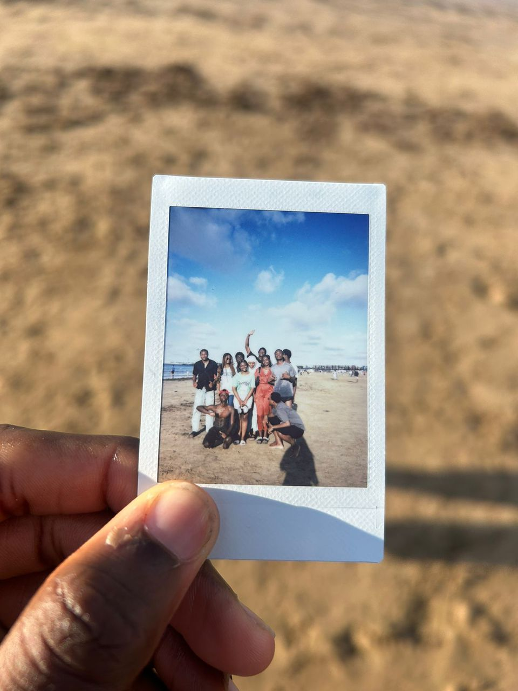
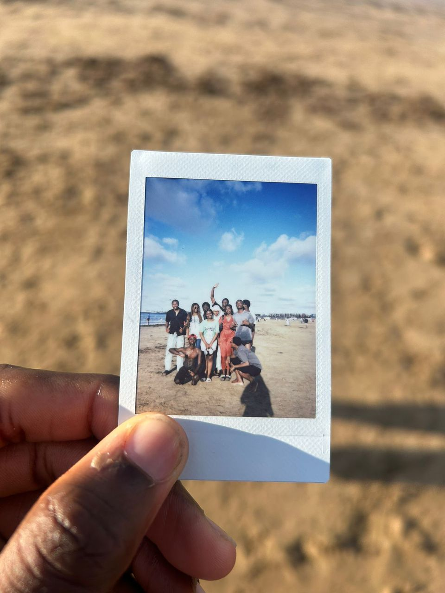
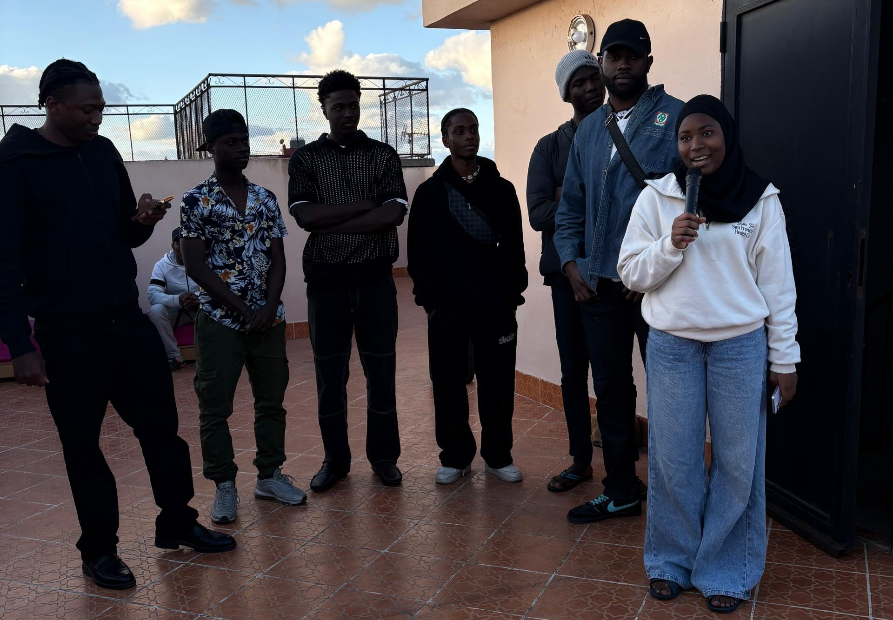
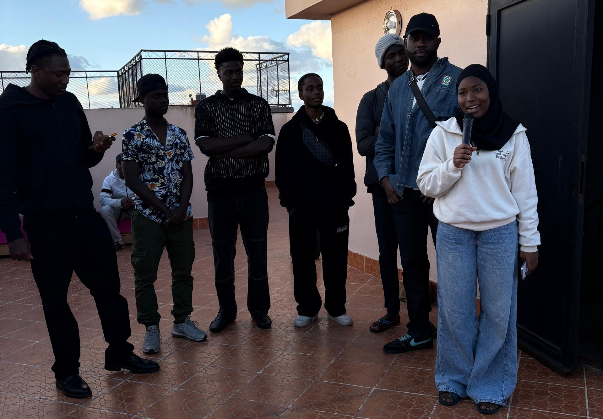

Coucou la jolie mignonne,
j’aurais pu faire un grand texte et tout mais bon, je vais le faire de façon simple et concis, parce que pour définir une personne aussi simple et gentille que toi je pense c’est ce qu’il faut 🙂↕.
Dans tous les cas juste dire que tu es vraiment une bonne personne et tu fais sincèrement partie de mes meilleures rencontres , bien badeuse la plupart du temps et sérieuse quand c’est nécessaire tu as vraiment le coeur sur la main , fin merci d’être Iman quoi 🙏🏽❤— Raph
Coucouuu Imana
Juste te souhaiter un joyeux anniversaire ma fille.
Qu’Allah te facilite les épreuves de cette dunnia, te facilite le port du hijab et par dessus tout t’accorde une très belle fin et le paradis Firdaws 🩷🎀 .
Et n’oublie pas de toujours prendre soin de ta santé mentale.
Soit toujours cette belle âme que tu incarnes.
Gbisouuuuuu🩷— Rama
À l’attention d’Iman,
Tu es une personne formidable, respectueuse, mature, amusante et agréable.
J’ai amplement apprécié ces moments passés en ta compagnie depuis que nous nous connaissons. Changes pas, reste cette personne égayante et préserve cette âme pondérée que tu as.
Puisse Allah te faire miséricorde et t’accorder tout ce qu’il y’a de meilleure pour toi !
J’espère te revoir prochainement !
— Aziz
Cousine Iman.
Je te kiffe beaucoup beaucoup.
Toi, ton charisme remarquable et percutant et la bonne vibe que tu envoie de par ta présence✨✨🫶🏾— David
Tu es comme une magnifique fleur qui embellit tout ce qui l'entoure et qu'on voudrais garder que pour soit.
Ta gentillesse est indescriptible.— Zion
On avait fait une sortie paintball entre amis, tout le monde était là pour s’amuser sauf Louisa apparemment qui s’était prise pour une exterminatrice.
À un moment, elle repère Iman qui était cachée derrière une barrière et au lieu de se mettre au moins à 5m pour l’éliminer elle s’est approchée d’elle et a tiré plus d’une balle😭, imaginez la douleur.
Iman a pleuré, on s’est un peu moqués et elle a fini avec une belle bosse comme souvenir🥰— Lynn-Andrée
Depuis le 1er jour je l’ai appelé ma petite sœur j’avais un bon pressentiment sur sa personne,
je me trompe rarement sur ça et c’est grâce à ça j’ai senti la belle personne qu’elle est en les accueillant et j’ai fait d’elle ma petite sœur,
certes je suis une grande sœur djandjou😞 j’ai beaucoup de petite sœurs mainon mais Toi Imane sache que tu as toujours ta place depuis septembre 2022 et que ça ne changera pas, si tu as besoin de moi je serai toujours là pour toi.
Ps: De grâce appelle 🤣si c’est message la Houmm 😞, bref love you sis!— Florine
Après 3 années passées à te côtoyer, mes mots ne pourraient jamais décrire ta gentillesse et ton sens du partage.
J’ai eu beaucoup de mal à écrire ce texte, non pas parce que je n’ai rien à dire, mais bien au contraire :
- Comme la fois où toi et Mahdi m’avez remis plus de 1000 DH, car mon activité m’avait endetté. (Qu’Allah vous récompense)
- Comme chaque fois où tu préparais de bons plats pour nous, et que souvent tu te mettais à pleurer parce qu’ils n’étaient pas assez bons à ton goût. (Qu’Allah te récompense)
Alors peut-être que ton papa avait raison d’une certaine manière, car même si tu n’es pas un prophète, tu partages beaucoup de leurs qualités, selon moi. 🫶🏾
Qu’Allah t’accorde la réussite dans tous tes projets, ici-bas et dans l’au-delà.
— Ibra
Dear Iman,
Il y a des présences qui apaisent, des sourires qui élèvent, et des âmes qui marquent sans jamais faire de bruit.
Tu fais partie de ces rares personnes dont l’élégance n’est pas seulement une question de style, mais une manière d’être, de penser, d’exister.
Merci d’être ce que tu es, une force douce, une lumière discrète, et une belle constante dans un monde souvent trop bruyant.— Yann
On dit dans le Coran que la femme vertueuse est “protectrice en l’absence, parce qu’Allah les protège.”
Et quand on te regarde vivre, on comprend ce que ça veut dire : tu es douceur, pudique, bienveillante, force tranquille.
Tu as cette lumière qui ne cherche pas à briller plus fort que les autres mais qui apaise, qui élève et qui nous inspire nous qui te côtoyons au quotidien.
Tu n’as pas besoin de parler fort pour qu’on t’écoute ni de tout montrer pour qu’on te voit parce que ta présence nous suffit.
que Dieu continue de te préserver et de t’inspirer toutes ces belles choses que tu dégages.
Ta Louiloui ❤❤.— Louisa
Chère koumbakoum,
Je ne suis pas très doué pour ce genre décorer, alors j’ai longtemps hésité, repoussé, et même ralenti les autres avant de me décider à écrire ce message. Mais aujourd’hui, j’ai enfin trouvé les mots.
Cette lettre, écrite à cœur ouvert, t’est destinée parce que tu le mérites et même plus encore. Depuis trois ans, tu es devenue la personne la plus chère à mes yeux, et j’espère sincèrement que tu le resteras pour toujours.
Ta joie de vivre, ton sourire, ton intelligence, mais surtout ta gentillesse ont touché tous ceux qui ont eu la chance de croiser ton chemin. Tu as su tisser des liens forts avec chacun, et c’est toi qui, quelque part, as été le ciment de notre groupe ici au Maroc. Grâce à toi, on est restés soudés, unis, comme une vraie famille.
On t’aime profondément. Peu importe où la vie te mènera, sache qu’on sera toujours là pour toi. Et moi, plus encore que les autres, je ne veux pas être qu’un simple soutien : je veux être l’épaule sur laquelle tu pourras toujours te reposer.
J’espère que ce petit cadeau t’apportera un sourire dès que tu le verras.
Je t’aime. ❤— Mahdi
Ma Sœur d’une autre mère 💕
En si peu de temps tu as su te faire une place exceptionnelle dans mon cœur je prends aujourd’hui un moment pour te dire à quel point tu comptes pour moi. Tu es bien plus qu’une amie : tu es ma confidente, la sœur que le Maroc m’a donné, Tous les souvenirs partagés avec toi sont tellement précieux qu’ils resteront à jamais gravés dans ma mémoire.
Que ce soit nos fous rires, nos discussions profondes , tout cela me rappelle combien notre amitié est précieuse.
Merci pour tous ses moments de joies, de tristesse aussi parce qu’on partage vraiment tout 😭,Tu es une personne exceptionnelle et je suis infiniment reconnaissante de t’avoir comme amie.
Que Dieu continue ce qu’il a commencé dans ta vie, je te souhaite de briller vraiment fort comme les étoiles dans le Ciel. Je t’aime mon amoureuse ❤— Marie-Ange


 

 



 
